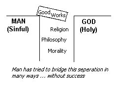
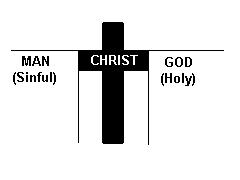
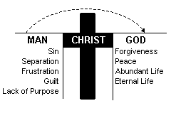

God loves you and wants you to exprience peace and life as His child.
The BIBLE says ... "For God so loved the world that he gave his one and only Son, that whoever believes in him shall not perish but have eternal life." John 3:16 (NIV)
 Being at peace with God is not automatic because you by nature are seperated from God.
The BIBLE says ... "For all have sinned and fall short of the glory of God" Romans 3:23 (NIV)
 God's love bridges the gap of separation between God and you. When Jesus Christ died on the Cross and rose from the grave, He paid the penalty for your sins.
The BIBLE says ... "He himself bore our sins in his body on the tree, ..." 1 Peter 2:24 (NIV)
 You cross the bridge into God's family when you receive Christ by personal invitation.
The BIBLE says ... "Yet to all who receive him, to those who believed in his name, he gave the right to to become children of God" John 1:12 (NIV)
ADMIT your spiritual need. "I am a sinner."
REPENT and be willing to turn from your sin.
BELIEVE that Jesus Christ died for you on the cross.
RECEIVE, through prayer, Jesus Christ into your heart and life.
The BIBLE says ... "Here I am! I stand at the door and knock. If anybody hears my voice and opens the door, I will go in and eat with him, and he with me." Revelation 3:20 (NIV)
"Everyone who calls on the name of the Lord will be saved." Romans 10:13 (NIV)
Dear Lord Jesus:
I know I am a sinner. I believe you died for my sins. Right now, I turn from my sins and open the door of my heart and life. I receive you as my personal Lord and Saviour. Thank you for now saving
me. Amen.
If you have prayed this prayer for yourself you are a (born again) Christian. This is not necessary an emotional experience. The Bible verses quoted have more to do with faith and obedience than anything emotional.
Take a firm stand for Christ. Tell somebody about your decision.
Read and study the God's Word. (Try reading the Gospel of John first)
Pray every day.
Meet regulary with other keen Christians in a Bible-teaching church, for worship and fellowship.
Check out Living out your Christian faith